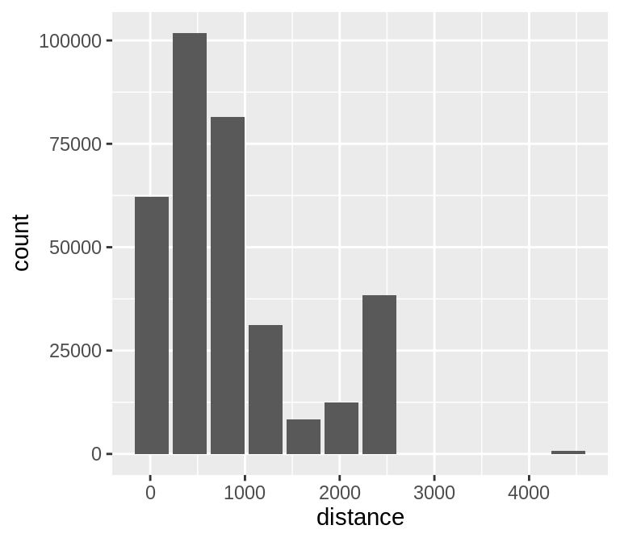
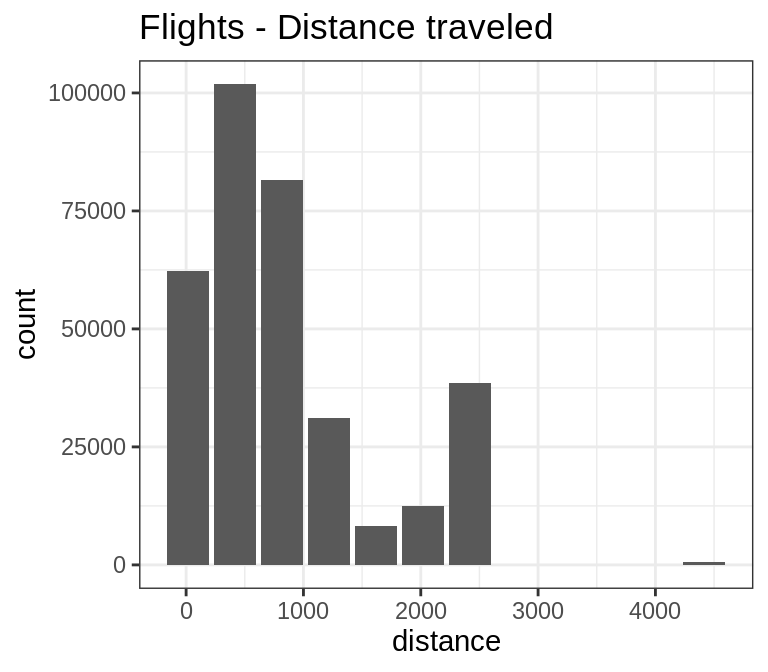
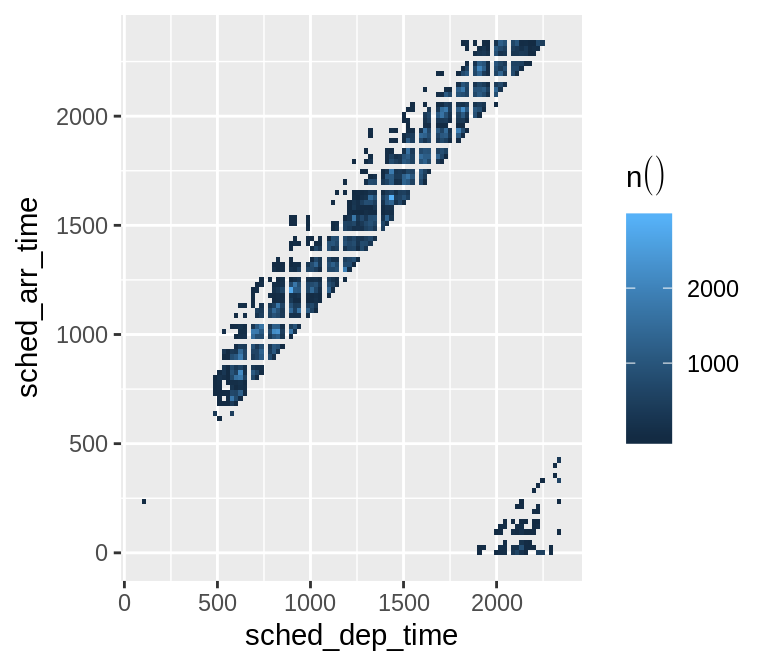
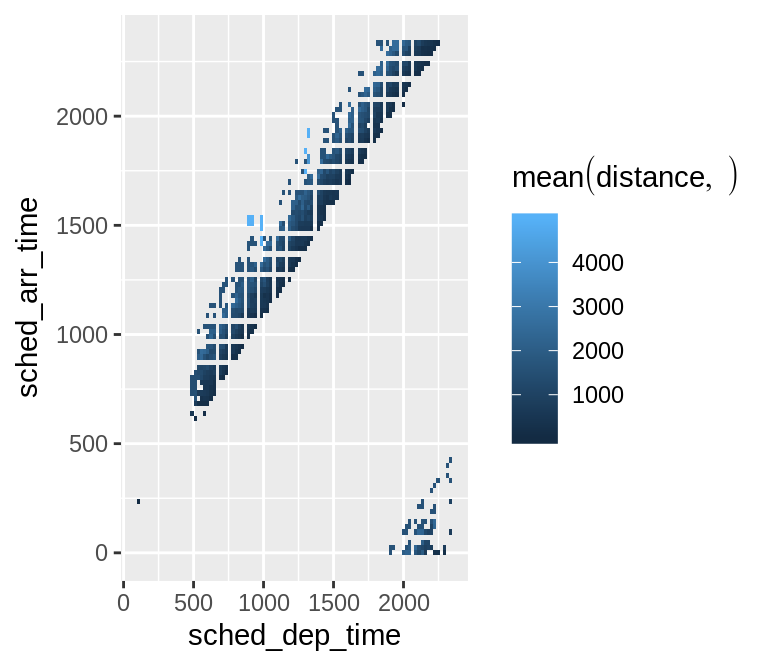
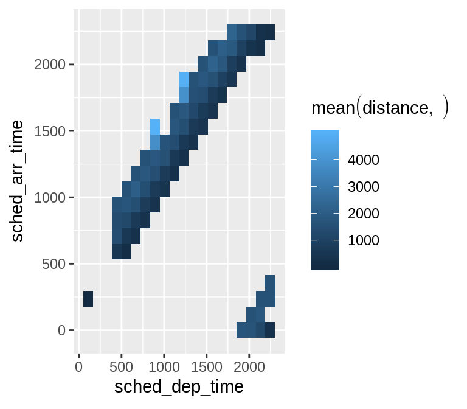
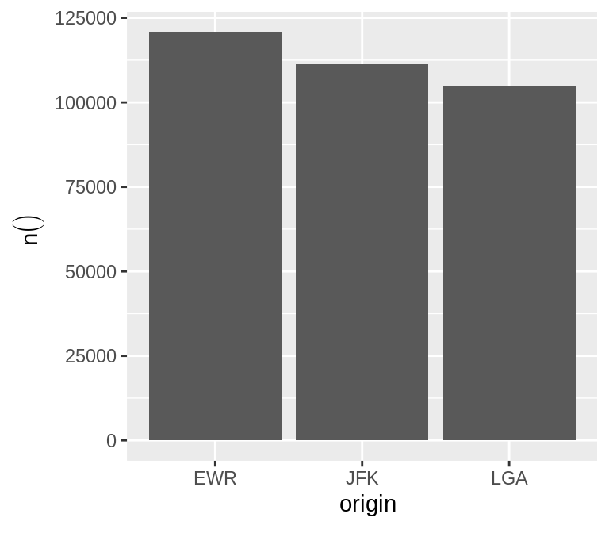
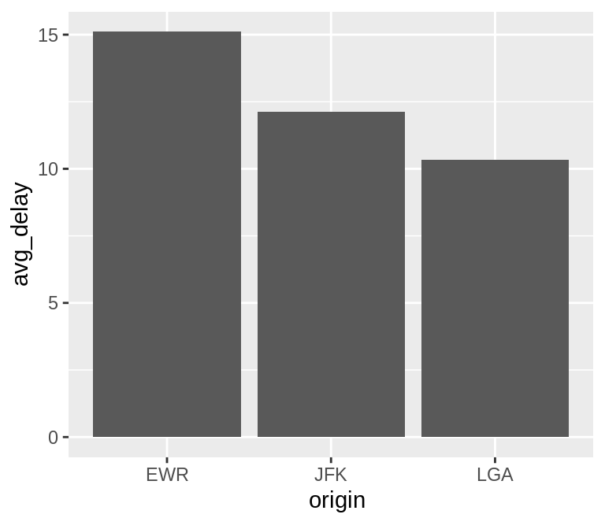
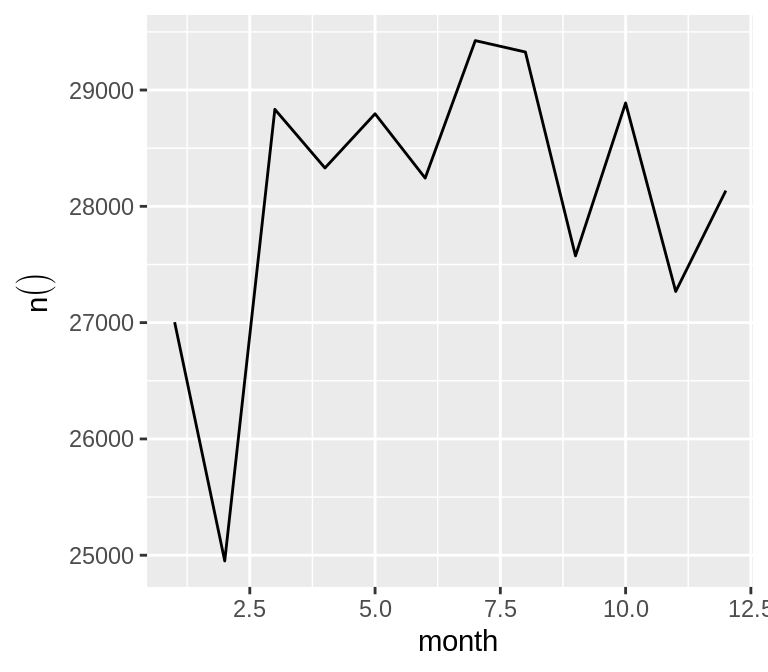
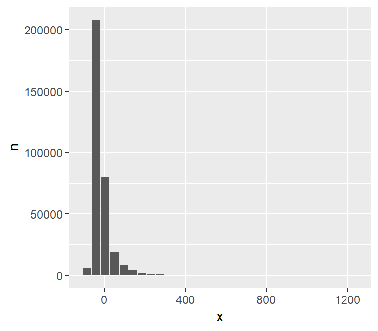

Leverages dplyr to process the calculations of a plot inside a database. This package provides helper functions that abstract the work at three levels:
- Functions that ouput a
ggplot2object - Functions that outputs a
data.frameobject with the calculations - Creates the formula needed to calculate bins for a Histogram or a Raster plot
Connecting to a data source
For more information on how to connect to databases, including Hive, please visit http://db.rstudio.com
To use Spark, please visit the
sparklyrofficial website: http://spark.rstudio.com
Example
In addition to database connections, the functions work with sparklyr. A Spark DataFrame will be used for the examples in this README.
ggplot
Histogram
By default dbplot_histogram() creates a 30 bin histogram

Use binwidth to fix the bin size
Because it outputs a ggplot2 object, more customization can be done
spark_flights %>%
dbplot_histogram(distance, binwidth = 400) +
labs(title = "Flights - Distance traveled") +
theme_bw()
Raster
To visualize two continuous variables, we typically resort to a Scatter plot. However, this may not be practical when visualizing millions or billions of dots representing the intersections of the two variables. A Raster plot may be a better option, because it concentrates the intersections into squares that are easier to parse visually.
A Raster plot basically does the same as a Histogram. It takes two continuous variables and creates discrete 2-dimensional bins represented as squares in the plot. It then determines either the number of rows inside each square or processes some aggregation, like an average.
- If no
fillargument is passed, the default calculation will be count,n()

- Pass an aggregation formula that can run inside the database

- Increase or decrease for more, or less, definition. The
resolutionargument controls that, it defaults to 100
spark_flights %>%
dbplot_raster(
sched_dep_time,
sched_arr_time,
mean(distance, na.rm = TRUE),
resolution = 20
) 
Bar Plot
-
dbplot_bar()defaults to a tally() of each value in a discrete variable

- Pass a formula that will be operated for each value in the discrete variable
## Warning: Missing values are always removed in SQL.
## Use `mean(x, na.rm = TRUE)` to silence this warning
## This warning is displayed only once per session.
Line plot
-
dbplot_line()defaults to a tally() of each value in a discrete variable

- Pass a formula that will be operated for each value in the discrete variable

Calculation functions
If a more customized plot is needed, the data the underpins the plots can also be accessed:
-
db_compute_bins()- Returns a data frame with the bins and count per bin -
db_compute_count()- Returns a data frame with the count per discrete value -
db_compute_raster()- Returns a data frame with the results per x/y intersection -
db_compute_raster2()- Returns same asdb_compute_raster()function plus the coordinates of the x/y boxes -
db_compute_boxplot()- Returns a data frame with boxplot calculations
## # A tibble: 28 x 2
## arr_delay count
## <dbl> <dbl>
## 1 4.53 79784
## 2 -40.7 207999
## 3 95.1 7890
## 4 49.8 19063
## 5 819. 8
## 6 140. 3746
## 7 321. 232
## 8 231. 921
## 9 -86 5325
## 10 186. 1742
## # ... with 18 more rowsThe data can be piped to a plot
spark_flights %>%
filter(arr_delay < 100 , arr_delay > -50) %>%
db_compute_bins(arr_delay) %>%
ggplot() +
geom_col(aes(arr_delay, count, fill = count))
db_bin()
Uses ‘rlang’ to build the formula needed to create the bins of a numeric variable in an un-evaluated fashion. This way, the formula can be then passed inside a dplyr verb.
## (((max(~var, na.rm = TRUE) - min(~var, na.rm = TRUE))/30) * ifelse(as.integer(floor(((~var) -
## min(~var, na.rm = TRUE))/((max(~var, na.rm = TRUE) - min(~var,
## na.rm = TRUE))/30))) == 30, as.integer(floor(((~var) - min(~var,
## na.rm = TRUE))/((max(~var, na.rm = TRUE) - min(~var, na.rm = TRUE))/30))) -
## 1, as.integer(floor(((~var) - min(~var, na.rm = TRUE))/((max(~var,
## na.rm = TRUE) - min(~var, na.rm = TRUE))/30))))) + min(~var,
## na.rm = TRUE)## # Source: spark<?> [?? x 2]
## x n
## <dbl> <dbl>
## 1 4.53 79784
## 2 -40.7 207999
## 3 95.1 7890
## 4 49.8 19063
## 5 819. 8
## 6 140. 3746
## 7 321. 232
## 8 231. 921
## 9 -86 5325
## 10 186. 1742
## # ... with more rowsspark_flights %>%
filter(!is.na(arr_delay)) %>%
group_by(x = !! db_bin(arr_delay)) %>%
tally()%>%
collect %>%
ggplot() +
geom_col(aes(x, n))
## NULL